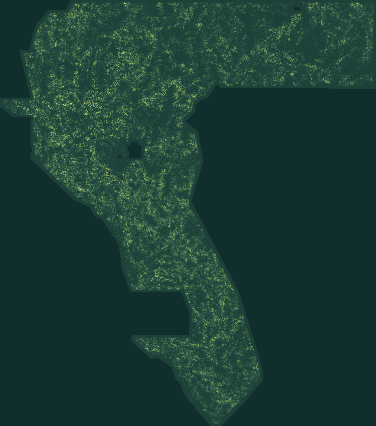

01 — FORENSIC EVIDENCE
44,090 → 37,654
H33 is an exact subset after a 200 m catalogue-flank prune. Its reported score has no artifact-linked submission receipt here.
Read the scientific explanation ↗GEMSDOE79 / E1 · MAGNETIC FABRIC OFFSET
AUTOMATED VERDICT: NEGATIVE · DO NOT SUBMITThe existing E1 geophysical response, exported and checked end to end. The file passes format validation. It does not pass the competition-readiness gate.
Single band · float32 · EPSG:32611 · 100 m · 3730 × 3292 · all values in [0,1]
Why it is blocked & how future submissions work ↗
Release correction · 2026-10-22: the conflicting H79-CSPT approval from PR #12 is withdrawn from this site. Its dense-prior exemption was not authorized. Work is preserved in the repository archive, not cleared for submission. Audit and limitations ↗ · Fresh witness re-check ↗ · Cross-family lineage JSON ↗

01 / THE DECISION
Format, uniqueness and performance are separate gates. One passes. One proves the run must stop. The others are explicitly unmeasured.
A new field, not a renamed prior submission. The negative verdict stays attached to every download.
These are identifiers for reproducibility, not an instruction to upload this file.
Automatic re-read, exact reference-grid comparison and ZIP round trip. No manual inspector is required.
A MATHEMATICAL BLOCKER
Measured by the unchanged shared template on a real, hash-verified registry raster.
The protocol counts every finite positive pixel as a dot. One prior is positive across the whole footprint. Its 3-pixel halo therefore covers every possible candidate point.
No dense-raster exemption, new threshold, random jitter or copied submission was introduced. The new field is retained as a negative-result deliverable, not a cleared candidate.
Open the reproducible certificate ↗02 / RESEARCH, NOT A PROJECTION
Actual raster bytes show H33 is D2.8 with 6,436 catalogue-near points removed. A plausible metric mechanism is not a proven private-score explanation.
H33 is an exact subset after a 200 m catalogue-flank prune. Its reported score has no artifact-linked submission receipt here.
Read the scientific explanation ↗Compare opposite-side magnetic profiles across a gravity edge. A repeatable nonzero lag may mark an offset; an intrusive contact or survey seam can mimic it.
See all four ranked hypotheses ↗The pre-placement duplicate gate stopped E1 before official scoring (run_card.json keeps holdout_dti.dti = null). A separate post-stop offline diagnostic on the restored 418 MB training_features.tif confirms that even under Decision D-1 Option B (0.0119 overlap) or Option C (0.3046 overlap), E1 clears all 72 leakage canaries (≤ 0.90) but scores HOLDOUT-DTI = 0.0474 [0.0390, 0.0552] (seed 20, n=11,321) and 0.0466 [0.0388, 0.0543] (seed 30, n=11,342), failing the matched zero-lag edge control gate and trailing the H33 fold-fair control (0.0961 / 0.0989).